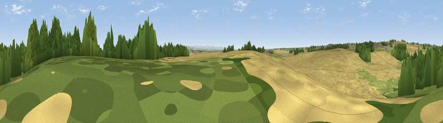

Viewpoint near Dalton Piercy
#29260 in England · top 71% of its area beats it · near Dalton PiercyWhere it is
The exact computed spot (NZ 48259 31100). Click the marker for map links.
The view, rendered

A 360° render of this exact spot computed from the terrain model, tree cover and land cover — summer colours, afternoon light, calibrated against photographs of famous viewpoints. Real trees, hedges and buildings will differ in detail.
The panorama
Grey silhouette: terrain skyline in each direction (720 bearings, Earth curvature and refraction included). Dashed green: skyline with trees (+15 m) and buildings (+8 m) as obstacles. Blue strip: how far the ground is visible on each bearing.
Where the view opens
Wedge length = distance to the farthest visible ground on that bearing (vegetation-aware). Rings at 10, 25 and 50 km.
What fills the view
47% cropland · 28% grassland · 17% woodland · 5% built-up · 2% water
Angular shares of the visible panorama (visual magnitude), not map area. Landscape diversity 0.55 (0–1 Shannon).
Key numbers
More beautiful places nearby
The staircase of upgrades: each row has a higher view potential than everything closer. Driving times are estimates from straight-line distance, calibrated against real road routing — check an actual route before setting out.
| Place | Direction | Drive | Score |
|---|---|---|---|
| Viewpoint near Seaton Carew | E · 3 km | ~8 min | 58.5 |
| Viewpoint near Seaton Carew | SE · 5 km | ~11 min | 59.1 |
| Viewpoint near Elwick | NW · 5 km | ~11 min | 70.5 |
| Viewpoint near Easington Colliery | NNW · 15 km | ~27 min | 74.4 |
| Viewpoint near Lazenby | SSE · 15 km | ~27 min | 86.4 |
| Warsett Hill | ESE · 23 km | ~38 min | 86.8 |
| Viewpoint near Easington | ESE · 28 km | ~45 min | 90.2 |
| The Knoll | SSW · 453 km | ~423 min | 91.0 |
54.67267, -1.25320 · source: osm viewpoint · position refined by local search. Computed location — check access rights before visiting.